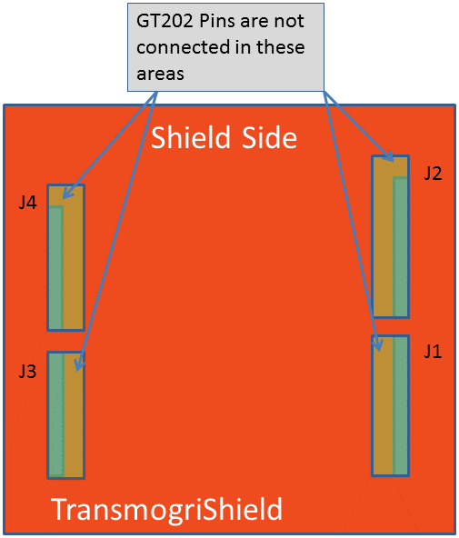

Arduino + GT202
The AllJoyn™ Thin Core Library includes a Wi-Fi driver for the GT202 Wi-Fi board, known as WSL. This document explains how to setup the hardware and software to run AllJoyn Thin Apps on an Arduino Due running FreeRTOS, including the WSL Wi-Fi driver, that connects to a GT202 Wi-Fi board over SPI.
Hardware Requirements
The following hardware devices are needed in order to test and evaluate the project as stated in this document.
- Arduino Due
- TransmogriShield
- GT202 kit
- Segger J-link JTAG or equivalent
- Segger ARM-JTAG 10-pin to 20-pin adapter
The following figures identify the connections between the Arduino Due, TransmogriShield, and GT202 kit.
- Align the female SPI connection of the TransmogriShield with the male SPI connection of the Arduino Due as shown in the following figure.
- Connect the male pins on the bottom of the GT202 kit to the female connectors on the Shield side of the TransmogriShield board as shown in the GT202 pinout diagram.

Figure: Arduino Due board connections

Figure: GT202 kit pinout
Installing Third-Party Software
Windows 7
Windows 7 third-party software and installation information
| Tool | Minimum version requirement | Installer/Notes |
|---|---|---|
| ARM GNU Tool Chain | 4.8 2013q4 | Download the installer and execute. Windows will install the ARM GNU Tool Chain in (C:\Program Files (x86)\GNU Tools ARM Embedded\4.8 2013q4\bin) which may be used for an environmental variable. |
| FreeRTOS | 7.6.0 |
|
| Atmel Software Framework | 3.15 |
This requires providing contact information to receive a link to the software. |
| J-Link software | 4.8.4a | Download the software and documentation and install. You must enter the serial number of the j-link device to complete the download./p> |
| Eclipse IDE | Release 2 | Download the appropriate Windows bit version. Uncompress the file folder to the local drive. If JRE (Java Runtime Environment) or JDK (Java Development Kit) has previously been installed, skip installing JRE (noted below). |
| Java Runtime Environment (required for Eclipse) | Download and install JRE. | |
| Atmel Studio IDE | 6.1 | Download the installer (full) and install. NOTE: The installation requires the PC to restart. |
| Python | 2.7.3 | Python 2.6 may also be used. Use the 32-bit version of Python even if you are building the AllJoyn framework for a 64-bit architecture.
|
| SCons | 2.3.0 |
|
Linux (Ubuntu 12.04)
| Tool | Minimum version requirement | Installer/Notes |
|---|---|---|
| ARM GNU Tool Chain | 4.8 2013q4 |
|
| FreeRTOS | 7.6.0 |
|
| Atmel Software Framework | 3.15 |
This requires providing contact information to receive a link to the software. |
| J-Link software | 4.84a | Download the software and documentation and install DEB, RPM or TGZ format. You must enter the serial number of the j-link device to complete the download. |
| Eclipse IDE | Release 2 |
If JRE (Java Runtime Environment) or JDK (Java Development Kit) has previously been installed, skip installing JRE (noted below). |
| Java Runtime Environment (required for Eclipse) | Open terminal and input sudo apt-get install openjdk-7-jre |
|
| Atmel Studio IDE | 6.1 | Download installer (full) and install. NOTE: The installation may require the PC to restart. |
| SCons | 2.3.0 | Open terminal and input sudo apt-get install scons |
Configuring the Project Environment
Get TCL for Arduino Due
- Create a project folder.
- Clone the ajtcl repo.
- Check out the master branch.
sh git clone https://git.allseenalliance.org/gerrit/core/ajtcl.git
The directory structure follows. Items marked with ** used in compilation and contain objects files.
**ajtcl (root folder)
**bsp (Board-specific package)
**due (Arduino Due target platform files)
config
**crypto (Encryption)
ecc
external
**sha2
inc
java
ecompass
.settings
src
org
alljoyn
bus
samples
**malloc (Memory allocation)
**RTOS (Real Time Operating System)
**FreeRTOS (RTOS used for Arduino Due)
Samples
basic
network
secure
**src (TCL source files)
target
arduino
examples
AJ_LedServices
samples
AJ_basic_client
AJ_basic_service
AJ_nameChange_client
AJ_SecureClient
AJ_SecureService
AJ_signal_service
AJ_signalConsumer_client
tests
AJ_aetest
AJ_bastress2
AJ_clientlite
AJ_mutter
AJ_sessions
AJ_siglite
AJ_svclite
linux
win32
**test (test applications .elf)
**WSL (unit and API applications .elf)
tools
unit_test
test_report
**WSL (APIs used for SPI with GT202)
Set up environment variables
NOTE: These variables can be passed into SCons without setting environmental variables.
Windows 7
- Right-click My Computer and select Properties > Advanced system settings.
- Click Environment Variables on the Advanced tab.
- Do the following to create a new system environment variable.
- Click New in the System variables section.
- In Variable, type FREE_RTOS_DIR.
- In Variable value, specify the name where the FREERTOS ZIP file was extracted. Example: "C:\FREERTOSv7.6.0\FREERTOS"
- Click OK.
- Click New to add another system environment variable.
- In Variable, type ATMEL_DIR.
- In Variable name, specify the path where the Atmel asf-standalone-archive ZIP file was extracted. Example: "C:\xdk-asf-3.15.0"
- Click OK.
- Click New to add another system environment variable.
- In Variable, type ARM_TOOLCHAIN_DIR.
- In Variable value, specify the installation path of the GNU ARM Toolchain. Example: "C:\Program Files (x86)\GNU Tools ARM Embedded\4.8 2013q4\bin"
- Click OK.
- Scroll through the user variables list and highlight PATH.
- Click Edit.
- In Variable value, add the installation path of the Python tool: "C:\Python27; C:\Python27\Scripts"
- Click OK several times to save your changes.
Linux Ubuntu (12.04)
The instructions below are based on calling the Eclipse from Terminal. Other calling methods for Eclipse will require declaring the environmental variables in a different location.
- Open terminal and edit .bashrc;.
- Add an export variable "FREE_RTOS_DIR" with the location of the FreeRTOS folder. Example: "export RTOS_DIR=~/FreeRTOSV7.6.0/FreeRTOS"
- Add an export variable "ATMEL_DIR" with the location of the Atmel asf-standalone-archive. Example "export ATMEL_DIR=~/ xdk-asf-3.15.0"
- Add an export variable "ARM_TOOLCHAIN_DIR" with the location of the GNU ARM Toolchain. Example "export ARM_TOOLCHAIN_DIR=/usr/bin"
- Do the following to verify environmental variables:
- Open terminal and navigate to the ajtcl directory.
- Enter "scons -h". The environmental paths found by the SCons script will be displayed.
NOTE: The default will mirror actual since there are no default values set in the script.
Configure the build file
Complete the following procedure to edit the FreeRTOSConfig.h.
- Navigate to the FreeRTOSConfig.h file, located in %ATMEL_DIR%/thirdparty/freertos-7.3.0/module_config.
- On approximately line 71, update the configCPU_CLOCK_HZ macro: Replace the sysclk_get_cpu_hz() function with 84000000UL.
- Add the following macros:
c
#define vPortSVCHandler SVC_Handler
#define xPortPendSVHandler PendSV_Handler
#define xPortSysTickHandler SysTick_Handler
Building with SCons
-
For Release variant: The build command is "scons TARG=bsp AJWSL=due VARIANT=release WS=off".
-
For the Debug variant:
- The build command is "scons TARG=bsp AJWSL=due VARIANT=debug WS=off".
- To clean the object files, add a "-c" at the end of the command. Example: "scons TARG=bsp AJWSL=due VARIANT=debug WS=off -c"
Configuring the IDEs
Setting up the Atmel IDE
Initial setup
- Create a new project by selecting File > New > Project.
- In the templates section, select C/C++ > Arduino-Boards for (Arduino Due/X - ATSAM3X8E).
- Enter a name and select a location.
- Locate the project in the Solution Explorer tab (tabs located along the bottom of the left pane).
- Right-click the project and select Properties.
- On the Build tab, select the Use External Makefile check box.
- Click Browse and navigate to the Makefile in the ATL source directory.
- Select the Tool tab and do the following:
- Select J-Link for the Selected debugger/programmer. (The j-link device's serial number is specified next to this option.)
- Select JTAG for the Interface.
- To test the build, right-click on the project and select Build.
- To test the clean, right-click on the project and select Clean.
Flash firmware to Arduino
- Set up the J-Link interface:
- Select Tools > Device Programming.
- Select J-Link for the Tool.
- Select ATSAM3X8E for the Device.
- Select JTAG for the Interface.
- Click Apply.
- Select the Memories tab.
- Do the following in the Flash section:
- Click Browse and navigate to the desired application (.elf) to upload the target device.
- Click Program.
- Click Close.
Debug the Atmel IDE
The makefile will build several target applications with a .elf extension
- In the Solution Explorer pane, right-click the project node.
- Rename it to the application that is going to be loaded.
Setting up the Eclipse IDE
Complete the procedures in this section using Eclipse.
Initial setup
NOTE: Do not run any setup functions in the background while performing the steps below as this may fail to load some required libraries.
Install the GNU ARM compiler and J-Link debugging
- Select Help > Install New Software.
- Do the following:
- Type the following URL in the Work with Edit box: http://gnuarmeclipse.sourceforge.net/updates
- Click Add.
- Click OK in the pop-up dialog box. Once the updates have been sourced from the website, the center pane will be populated.
- Click Select all and then click Next at the bottom of the dialog box.
- Click Next again to follow the prompts to accept license agreements. Acknowledge and security warnings if prompted.
- After the software updates have been completed, click Yes to restart the Eclipse IDE.
Configure a project in Eclipse
- Create a new project by selecting File > New > Makefile Project with Existing Code.
- Enter a name for your project.
- In Existing Code Location, click Browse and navigate to the /ajtcl folder. You can close the Welcome screen in order to view the Project Explorer.
- In the Project Explorer, right-click on the new project and click Properties.
- Do the following:
- Select C/C++ Build in the left pane.
- On the Builder Settings tab, unselect the Use default build command check box.
- Do the following for Windows 7:
- In Build command, enter "C:\Python27\Scripts\scons.bat".
- Select the Behavior tab.
- Do the following:
- Next to Build (Incremental build), update the entry field with "TARG=bsp AJWSL=due VARIANT=debug WS=off".
- Next to Clean, update the entry field with "TARG=bsp AJWSL=due VARIANT=debug WS=off -c".
- Click Apply and click OK.
- Do the following for Linux (Ubuntu):
- In Build command, enter scons.
- Select the Behavior tab.
- Do the following:
- Next to Build (Incremental build), update the entry field with "TARG=bsp AJWSL=due VARIANT=debug WS=off".
- Next to Clean, update the entry field with "TARG=bsp AJWSL=due VARIANT=debug WS=off".
- Click Apply and then click OK.
- Validate the IDE can compile the project by either clicking the hammer icon on the ribbon bar or entering Ctrl-B.
NOTE: After the project has completed compilation, all available applications (*.elf) are available to flash and debug.
Flash and debug
- Set up the j-link interface by selecting Run > Debug Configurations.
- In the left pane, right-click GDB SEGGER J-Link Debugging and click New.
- Do the following on the Main tab:
- Click Browse under the C/C++ Application field entry.
- Navigate to the .elf file (target application) required for flashing and debugging.
- Under the Project location, click Browse and navigate to the current project folder.
- Select the current project folder and click OK.
- Select the Debugger tab.
- To the right of Executables, click Variables.
- Click Edit Variables.
- Click New to create a new variable.
- In Name, type jlink_path.
- Do one of the following in the Value field:
- For Windows, enter C:\Program Files (x86)\SEGGER\JLinkARM_V480a.
- For Linux, enter /usr/bin.
- Click OK.
- Do the following on the Debugger tab:
- Make sure the Executable field path is: ${jlink_path}/JLinkGDBServer${build_files}.
- In Device name, enter ATSAM3X8E.
- In the GDB Client Setup section, navigate to the executable file arm-none-eabi-gdb.exe.
- In Windows, it may be located in C:\Program Files (x86)\GNU Tools ARM Embedded\4.8 2013q4\bin.
- In Linux, it should be in \usr\bin.
- Click Apply and Debug to start the debugging session.